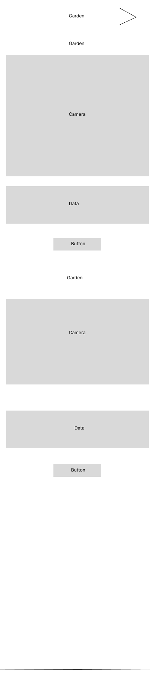
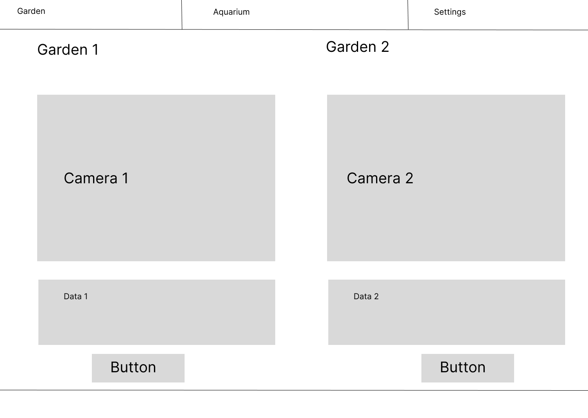
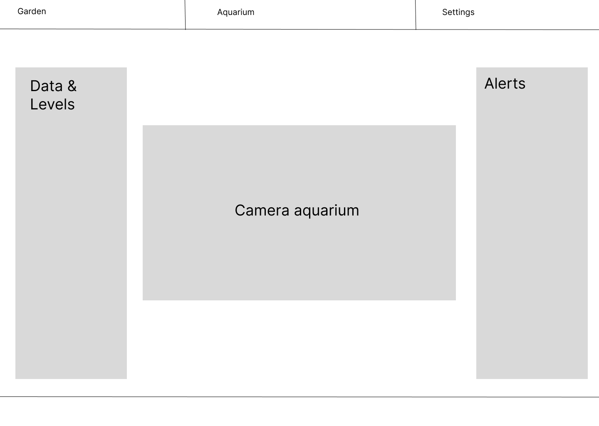

All files and folders will adhere to the course's naming conventions, using lowercase letters and hyphens
instead of spaces (e.g., index.html, styles.css, scripts.js).
The website’s markup will be validated using the W3C HTML Validator to ensure compliance with modern web standards.
All CSS styles will be verified using the W3C CSS Validator to ensure an error-free and optimized design.
Garden & Indoor Monitoring - This name reflects the website’s purpose: allowing users to monitor and control their home garden irrigation system and indoor aquarium remotely.
"How can I check if my garden needs watering while I'm away?"
Users can log in and view real-time soil moisture data from their devices.
"What if my aquarium’s water level drops too low?"
The system will send an alert and automatically trigger the water refill mechanism.
📱 Mobile View: A simple navigation bar with quick access to monitoring data.
💻 Desktop View: A dashboard-style layout displaying garden and aquarium data side by side for efficient monitoring.
 